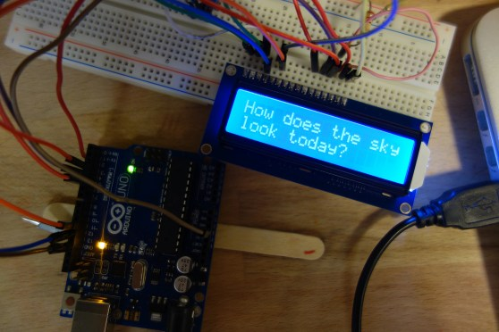
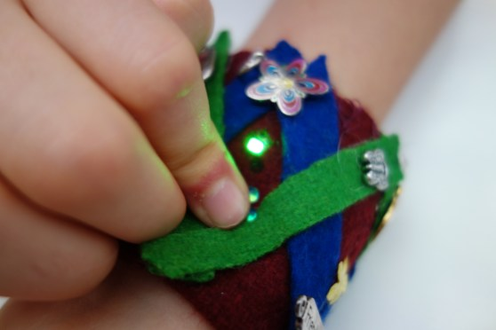

2020 (currenet): Transfocality, Goldsmiths University of London
Assosiate Lecturer on this Masters degree level module on the MA Design: Expanded Practice. This masters level module is led by Jennifer Bain.
2017-19: Hardware Hacking, University of the West of England
Module leader on undergraduate module on BA Creative Media Design, University of the West of England
Through this module students explored the interrelationship between software and the material world. It was a practice based module, and students learned through practical workshops including: lectures, seminars, tutorials, field research, guest lectures, project supervision, practical classes and technical workshops. develop your own projects based on the concepts and technology we explore.
I designed and led this undergraduate module, with guidance from programme leader, Rod Dickinson.
An interactive “botox simulator” by 3rd year Hardwarae Hacking student
2016-19: Pervasive Media, University of the West of England
In this module students designed mobile media that connects people and place. They developed ideas through situated or responsive activities: open-ended methods to engage hands-on and in-situ with some of the underlying ideas in the module. And designed mobile apps that encouraged participants to re-view, re-imagine, or re-think their surroundings.
I designed and led this undergraduate module, with guidance from programme leader, Rod Dickinson.

Part of a mobile walking tour by 2nd year Pervasive Media student
2017: Augmented Reality Game Design, NuVu Glasgow
Game design studio at NuVu, Glasgow
This two week game design studio was a creative and technical exploration into AR games. It was designed for young people (aged 12-16), and students learned how to used Unity3D to make table-top AR games. There was a lot of creative development, such as discussion around what makes a game (and what makes a game fun). Students also learned by playing games (lots of them – theatre games, traditional games, bonkers games, games from the crowd, board games), and they used collage, drawing, and writing techniques to support visual ideas and develop and stories. By the end of the two weeks students had learned how to work between Photoshop and Unity3D to create sprites and basic character animation. They also build games to iOS with Vuforia to add the AR interaction.
I co-designed and co-taught this summer school studio with Matthew Tytel
 Hand-drawn asset being made into an animation in Unity3D by a younger game design student
Hand-drawn asset being made into an animation in Unity3D by a younger game design student
2016: Interactive Game Design, Code Liberation Foundation
Co-development and teaching on interacitve games classes at the V and A
2016: Bio Fashion, NuVu Glasgow
High-school design studio at NuVu, Glasgow
I co-designed and taught this studio with Andrew Todd Marcus
2015: Urban Interactive Design, NuVu Boston
High-school design studio at NuVu, Boston
2015: Interactive Accessory Deisgn NuVu Mumbai
High-school design studio at NuVu, Mumbai
2014: Analogue and Digital Circuit Design, Lick Wilmerding High School San Francisco
High-school class at Lick Wilmerding High School, San Francisco
This module was initially designed by Andrew Kleindolph, and I made some additions, and led the teaching whilst he was on sabbatical.
2014: Design and Technology, Lick Wilmerding High School, San Francisco
High-school class at Lick Wilmerding High School, San Francisco
This module was initially designed by Andrew Kleindolph, and I made some additions, and led the teaching whilst he was on sabbatical.